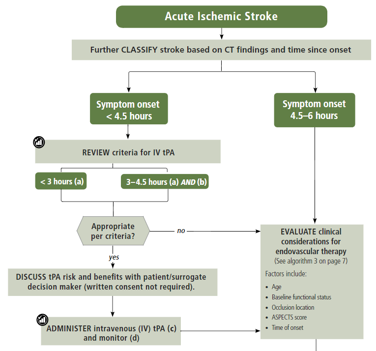

Technical Requirements
Overview
The openEHR Process and Planning Overview describes the general requirements for Task Planning and its related formalisms, which may be summarised as follows:
-
long term clinical plans;
-
reminders / checklist items for basic actions that are often missed or forgotten due to busy workplace and fatigue;
-
complex sets of actions defined by clinical pathways;
-
decision points that determine which path from alternatives to follow;
-
actions requiring sign-off;
-
coordination of workers in a distributed team;
-
actions that result in recording something in the EHR;
-
actions of varying levels of granularity that are needed in a training mode.
Task planning is accordingly applicable to numerous clinical scenarios, exemplified by the following:
-
routine simple medication administration, e.g. for post-operative pain - tasks extend across worker shifts;
-
complex drug administration e.g. multi-drug chemotherapy over multiple days;
-
physiotherapy rehabilitation sessions - recurrent therapeutic procedure, with defined end-point;
-
dialysis - recurrent therapeutic procedure;
-
diet + physical activity plan for overweight treatment - recurrent tasks, patient as a performer;
-
surgery planning - one time event;
-
acute stroke management - multiple sets of tasks coordinated across multiple performers.
Within these and many other similar clinical procedures, a number of commonly occurring specific technical requirements appear, described below.
Flexible Allocation of Workers
The varying availability of workers for a given plan execution needs to be accommodated within the planning architecture. It should be possible for the specific worker performing a task to leave and be replaced by another, whether during an active period of work, or between tasks within the plan.
Coordinated Teamwork
In many cases, a plan is intended for execution by a team of specialised performers, with each performer doing their part of the work, and at various points, passing control to another team member. Management of acute stroke is an example of this. In other cases, team members are working more or less in parallel, or by communicating in real time to each other. In both situations, if the workers are not physically in the same room at the same time, notifications are needed to alert each person when to start working on the subject; similarly, callback notifications are needed to alert original workers when other work has been completed, for example, an MRI image taken and report written.
Planned Tasks for an Order
The simplest need is to be able to post a full plan of all actions to be performed for an order, in advance of the order commencing. This would result in a series of Tasks for each planned openEHR ACTION at execution time.
In openEHR, an order is represented by an INSTRUCTION instance, which contains a directive to do something such as perform radiography or administer medication. The form of representation in the Instruction is normally interpretable by an agent who will convert it to separate tasks. For example, a drug order for Amoxicillin 500mg oral tablet 3 times/day x 7 days is converted by a human agent to 21 separate tasks, each consisting of taking one tablet at a certain time or day. These tasks can be represented in a plan, each task of which which can then be performed and signed off by a staff member, e.g. a shift nurse. The structure of such a granular plan can act as a record of what has been done (or not), and what is left to do.
One difficulty with posting a full plan is that in some cases, the work is effectively open-ended, i.e. it has no currently known completion date. E.g. diabetes is a chronic condition, so insulin treatment will never be completed. Or currently no assumption can be made about the completion date, e.g. pain medication for a trauma patient.
Tracking Orders from Plans
A standard activity within any clinic context is to raise orders, e.g. for lab tests, radiology etc, and to await the results. This may commonly be done within the context of a plan representing a standard protocol, such as for an annual schedule of health checks for various categories of patient (child, adult, elderly, diabetic etc). In an openEHR context, orders are represented using Instruction EHR entries, with subsequent actions being recorded as Action entries in the EHR. Where a plan is defined to create orders, it should be possible to define tasks in the plan to create, execute (i.e. send) orders, and wait on results, for multiple simultaneous orders in the same plan.
Order Sets and Protocols
A plan for a clinical intervention will typically need to encompass more than one order, in situations where drugs and other therapies are used according to a protocol or regime. For example, in multi-drug chemotherapy based on protocols like CHOP (non-Hodgkin’s lymphoma), COPP or Stanford V (Hodgkin’s lymphoma) etc, a single drug such as Cyclophosphamide is just a component. A plan for administering chemotherapy according to a R-CHOP protocol would implicate orders for the drugs (R)ituximab, (C)yclophosphamide, (H)ydroxydaunorubicin, (O)ncovin, and (P)rednisolone or Prednisone, and would accordingly include planned tasks for each of these drugs as they are administered according to the protocol.
| Drug | Standard [R]-CHOP-14 or [R]-CHOP-21 |
[R]-Maxi-CHOP | Mode | Days |
|---|---|---|---|---|
(R)ituximab |
375 mg/m² |
375 mg/m² |
IV infusion |
Day 1 |
(C)yclophosphamide |
750 mg/m² |
1200 mg/m² |
IV infusion |
Day 1 |
(H)ydroxydaunorubicin |
50 mg/m² |
75 mg/m² |
IV bolus |
Day 1 |
(O)ncovin |
1.4 mg/m² (max. 2 mg) |
2 mg |
IV bolus |
Day 1 |
(P)rednisone or (P)rednisolone |
40 mg/m² |
100 mg |
PO qd |
Days 1-5 |
(Extract from Wikipedia.)
A more general notion is of a protocol or guideline, which is a full set of actions to be performed to achieve a goal. Some of the actions will have corresponding orders, but others, such as making intermediate observations, may not. Examples can be found at sites such as the UK National Institute for Care and Excellence (NICE).
Lookahead Plan
A more flexible version of a plan is 'lookahead' planning, i.e. posting a plan of tasks for a moving window in time, e.g. one day, a few days, a few nursing rotations etc. The idea is not to try to plan out the entire plan execution, since it can easily change or be stopped, e.g. due to change in patient or other unexpected events. In a lookahead approach, some planned tasks are executed, and more planned tasks are added. The planned timing of each set of tasks may change due to the current situation, with the effect that the overall set of tasks that unfolds in time may well be different from an attempt to plan all tasks before any are executed.
For the open-ended cases mentioned above, the only option is a lookahead plan that extends as far ahead in time as the treating physicians are prepared to go.
Recurring / Repeatable Tasks
Many clinical plans involve repetition over time. For example, the 14-day version of the CHOP protocol (CHOP-14) involves execution of the 5 day treatment every 14 days, for 3 iterations. Other clinical plans are essentially permanently recurring for the life of the patient, e.g asthma therapy.
Checklist & Sign-off
If a plan is created, the constituent tasks can be viewed by workers as a checklist, and subsequently signed off as having been either performed or not done over time. The utility of this is that the correspondence between the tasks actually performed (represented by ACTION, OBSERVATION etc Entries) and the planned tasks is established. If a planned Action A1 is posted with execution time T, it might actually be performed at time T', but users still want to know that it was planned Action A1 that was intentionally performed, and not some other Action in the plan. Over the course of the order execution, a picture will emerge of planned Actions being performed and signed off, possibly with some being missed as not needed, or not done for some other reason. Additional Actions not originally posted in the plan might also be done if they are allowed by the general specification of the relevant archetypes.
Sub-plans
Plans can be described at varying levels of detail, depending on how workers are intended to relate to them. One institution may describe an action such as cannulation atomically, relying on professional training and situational specifics to generate the correct concrete outcome, whereas another may require nurses to follow a guideline such as the Medscape Intravenous Cannulation guideline. In cases where a self-standing clinical task is itself fully described in terms of steps, it is possible to represent the latter as its own plan, and to be able to refer to it from another plan. The general case is that any task that could be represented by a single item in a plan could also be represented by a reference to a separate detailed plan.
Task Grouping, Optionality and Execution Basis
A set of tasks intended to achieve a defined goal could be performed sequentially or in parallel, and may include sub-groups of tasks that can performed together. A common situation is to have a plan intended for sequential (i.e. ordered) execution by the agent, one of whose steps is actually a sub-group of tasks which can be executed in parallel (i.e. in any order).
It can also be assumed that some tasks in a plan may be designated as optional, to be executed 'if needed' or on some other condition being true.
The general structure and execution semantics of a plan therefore includes the notion of sequential or parallel execution of groups of tasks, and also optional execution of some tasks. We can consider the plan itself as a outer group of tasks for which either sequential or parallel execution can be specified.
Decision Pathways
Task plans derived from semi-formal care pathways or guidelines (and potentially ad hoc designed plans) may contain 'decision points', which are of the following logical form:
-
decision point: a step containing a variable assignment of the form
$v := expression; -
subordinate decision paths: groups of tasks each group of which has attached a variable test of the form
$v rel_op value, whererel_opis one of=,/=,<,>,<=or>=.
An example of decision points is shown below, in an extract from the Intermountain Healthcare Care Process Module (CPM) for Ischemic Stroke Management:

In this example, the node containing the text "Further CLASSIFY …" corresponds to a decision point that can be represented as $symptom_onset_time := t, where t is a time entered by a user. The subsequent nodes in the chart can be understood as paths based respectively on the tests $symptom_onset_time < 4.5h and 4.5h < $symptom_onset_time < 6h.
The ability to include decision pathways enables conditional sections of care pathways to be directly represented within a plan.
Different types of Cancellation
Tasks in a plan can be cancelled before being attempted for two types of reasons. One case is when the performer or the system realises the task can’t be performed (perhaps for lack of resources), and it is cancelled from the plan ahead of time. The other case is when the performer or system realises that the task isn’t needed, and can be cancelled as unnecessary, or already done by an external agent (e.g. an examination done at a night clinic).
In the first, case, the cancellation can be understood as a 'failed' task, whereas in the second, it is equivalent to a successful task. These two flavours of cancellation should be understood by the system so that plan success or failure can be reliably determined.
Changes and Abandonment
Inevitably, some plans will have to be changed or abandoned partway through due to unexpected changes in the patient situation. The question here is: what should be done with the remaining planned tasks that will not be performed? Should they be marked as 'won’t do' (with some reason) and committed to the EHR, or should they be deleted prior to being committed to the EHR?
It is assumed that the answer will differ according to circumstance and local preference, in other words, that planned tasks that are created are not necessarily written into the EHR, but may initially exist in a separate 'planned tasks' buffer, and are only committed when each task is either performed or explicitly marked as not done, or else included in a list of not-done Actions to be committed to the EHR at a point of plan abandonment.
The following kinds of abandonment of tasks should be supported:
-
cancellation of an entire plan that has been posted to the EHR or a 'planning buffer' if one exists;
-
cancellation of a particular task on a list ahead of time, with a reason;
-
marking a task as 'did not perform' after the planned time has passed, with a reason.
Rationalising Unrelated Work Plans
It is assumed that at any moment there could be multiple plans extant for different problems and timelines for the same subject of care, e.g. chemotherapy, hypertension, ante-natal care. If naively created, these could clash in time and potentially in terms of other resources. There should therefore be support for being able to efficiently locate all existing plans and scan their times, states and resources. This aids avoiding clashes and also finding opportunities for rationalising and bundling tasks e.g. grouping multiple tasks into a single visit, taking bloods require by two protocols at the same sitting etc.
It should be possible to process multiple plans as part of interfacing with or constructing a 'patient diary', i.e. rationalised list of all work to be done involving the patient.
Support Process Analytics
As tasks are performed and signed off on the list of posted planned tasks, there will generally be differences between Actions actually performed and the tasks on the list. Differences may include:
-
time of execution - this will almost always be different, even if only by seconds;
-
performer - a task intended to be performed by a specific type of actor (say a nurse) might be performed by another (say the consultant);
-
any other modifiable detail of the order, e.g. medication dose in bedside care situations.
These differences are obtainable from the EHR since both planned tasks and performed Actions will appear, providing a data resource for analysing business process, order compliance, reasons for deviation and so on.
Support for Costing and Billing Information
It should be possible to record internal costing data against plans as a whole, and also individual tasks. Additionally, it should be possible to attach external billing information to tasks and plans. Costing information might be attached to each task, such as consumption of inventory items, time and other resources. Billing information is typically more coarse-grained and reported using nationally agreed code systems, e.g. ICD10 or similar.